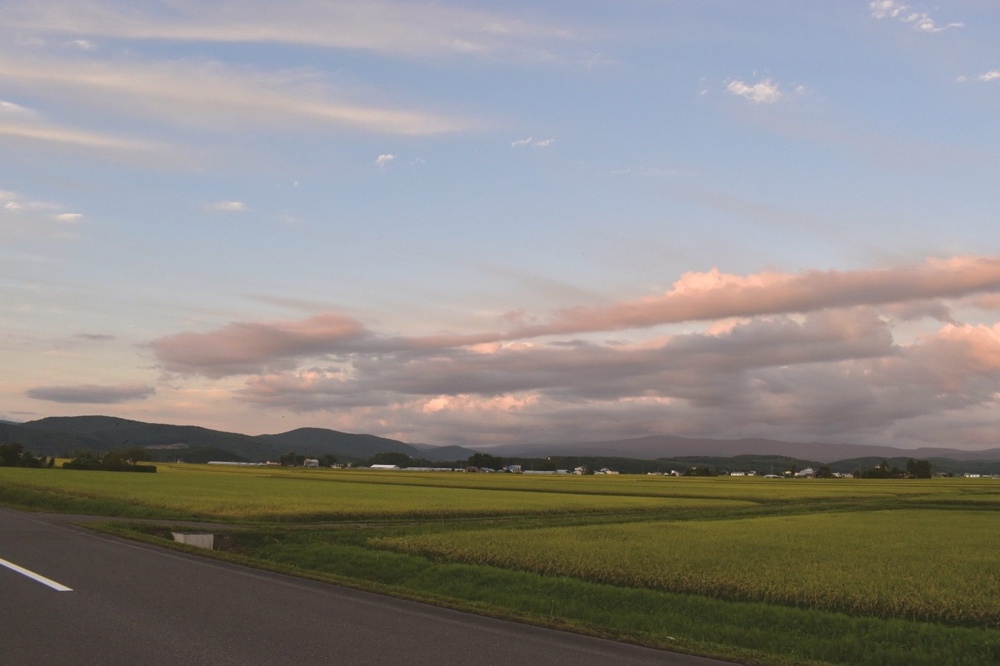
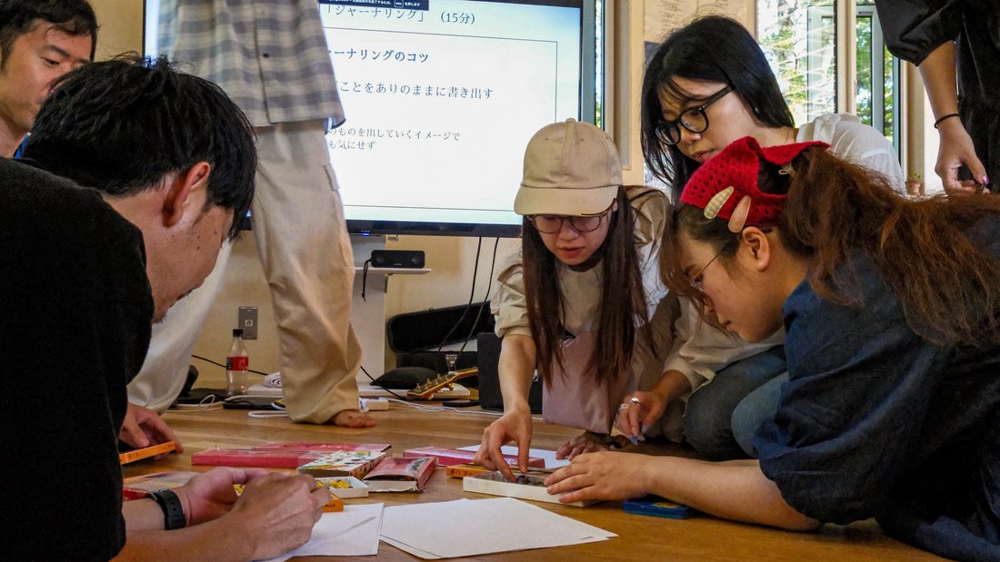
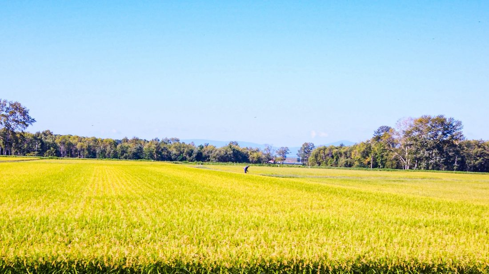
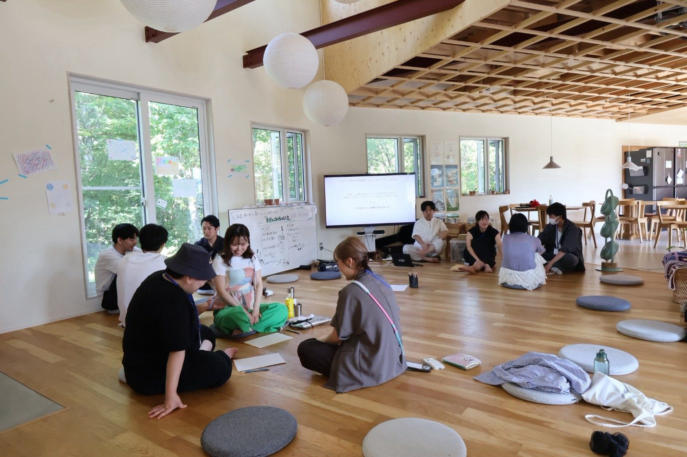
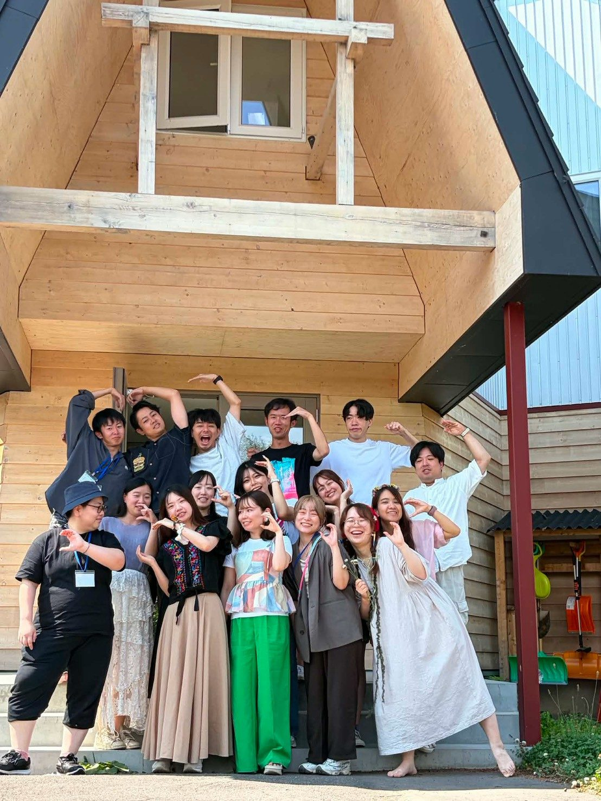
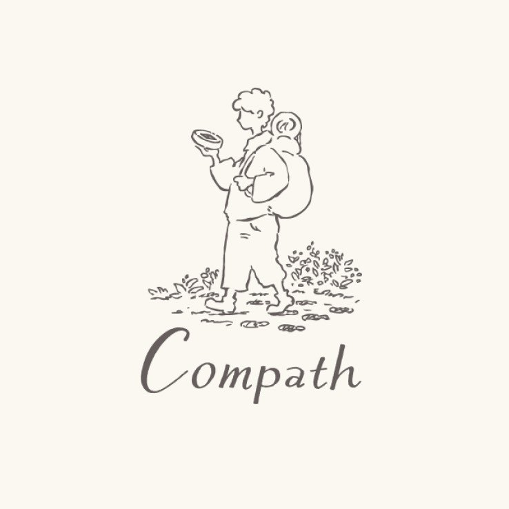

「今年は、何をしていた一年だったんだろう」「どんな一年だったんだろう」。そう思いはじめる12月のはじめに、北海道の東川町で、自分と向き合う2泊3日です。
北海道・東川町／2泊3日／定員15名
申し込む申込締切は11月5日（木）12:00、先着順です。10月8日（木）20:00からオンライン説明会をひらきます（LINEで予約する）。


年始に決めたことを、もう思い出せない。手帳の1月のページに何か書いた記憶はあっても、中身は忘れてしまった。夏が終わって、今年も残り3ヶ月だと気づく。早いし、まだ何も変わっていない気もする。
去年の年末も、気づいたら年が明けていました。12月は毎年いちばん慌ただしい月で、立ち止まる時間はいつも「落ち着いたら」になる。そして、落ち着く日はなかなか来ません。
この3日間では、1月から11月まで一枚ずつ選んだ写真を持って東川に集まり、東川で暮らす方たちと一緒に2026年を見返します。
一年を振り返るとき、あなたは何をしますか。手帳を開いたり、カメラロールをさかのぼったり。ただ、それを年末の慌ただしい数日でやろうとして、結局そのまま年を越してしまう、ということが起きがちです。
この3日間でやるのは、その作業です。1月から11月まで、その月を思い出す写真を一枚ずつ選んで持ってきてもらい、11枚を並べながら、どこで誰といて何に時間を使っていたのかを思い出していきます。翌日は冬のまちに出て、いまの自分の目が何に止まるのかを、もう一度写真で確かめる。手がかりは、過去に撮った写真と、これから撮る写真の2種類だけです。
 出会う
出会う初日のイントロダクション／ランチ／写真を持ち寄る時間／夕食
東川町民の方も、同じように11枚の写真を持ち寄ります。初日は参加者とまちの方が混ざった小さなグループで、それぞれの一年を聴き合う。ランチも夕食も一緒です。同じ2026年でも、何を節目として覚えているかは人によって違います。
2日目｜午前：森でのフォトウォーク／午後：ひとりでまちを歩く
2日目が今回のメインです。午前は写真家の方と森へ、午後は一人でまちへ。地面の雪、冬の光、自分の目が止まったもの。撮り終えたら持ち寄って、それぞれのまなざしの違いを見ます。
毎日のひとりの時間／1日を綴じるリフレクション／少人数での対話
ひとりの時間を毎日とります。散歩でも、暖炉の前でぼーっとするのでも、書き出すのでも構いません。そのうえで仲間と対話し、最後は自分の言葉で綴じます。
この3日間は、申し込んだ日から始まります。1月から11月まで、それぞれの月から1枚ずつ写真を選び、事前にアルバムへ入れておいてください。

事前準備
その月を思い出す一枚を、
1月から11月まで。
初日は11枚を並べながら、たとえばこんなことを振り返ります。
この11枚は、参加者だけが持ってくるものではありません。初日に一緒に過ごす東川町民の方も、同じように11枚を選んで持ち寄ります。それぞれの一年を並べて聴き合うので、同じ2026年でも節目の置きどころが人によって違うことが見えてきます。
「12月に11枚を選ぶ」と決めた時点から、残りの数ヶ月の見え方も少し変わります。あとで一枚を選ぶと分かっていると、10月と11月の日々の眺め方も、記録の残し方も変わってくる。11枚を並べたあとは、写真・言葉・絵などを使って「2026年の自分のMEISHI」をつくり、少人数でMEISHIを見ながら、お互いの一年を聴き合います。
会場も日数も8月の第1回と同じですが、3日間で大切にすることを変えています。
8月に同じ校舎で3日間を過ごしてみて、ひとつ思ったことがあります。POOLOに集まる人は、話すことや自己開示の最初の一歩が得意な方が多い。そのぶん、そこから先の、深く自分と向き合って対峙するところは、無意識に避けてしまうこともあるのではないか。夏が東川に出会うところから世界の広がっていく3日間だとすれば、冬は東川を使って自分のほうを見る3日間にしたくて、時間の多くをそこに置きます。

北海道のほぼ中央、大雪山国立公園の麓に東川町があります。人口はおよそ8,400人。上水道がなく、8,400人全員が地下水で暮らしているまちで、家具をつくり、移住してきた人と元からの住民がゆるやかに混ざり合っています。そして東川町は「写真の町」を名乗っていて、初日はその成り立ちにも触れます。
写真をテーマにするなら夏でもよかったはずですが、12月にしたのは、冬になると見えるものが減るからです。雪が積もると景色の情報量が落ち、外を歩く速度も自然とゆっくりになる。寒さがあるぶん室内と外の行き来が生まれ、薪ストーブと食事と共同生活の時間が、夏よりずっと一日の中心になっていきます。白い景色のなかでは、何かが目に入ることそのものが少ない。それでも目が止まったものには、意味があるはずだと考えました。
これは仮説で、まだ確かめていません。12月の東川で、11枚を持ってきた人がその日どこにレンズを向けるのか。そこがこの回でいちばん見たいところです。
余白を十分に取り、時間をかけて対話する。意図的にペースをゆっくりにするのが、東川・Compath のスタイルです。いまの時間割は案で、各プログラムの詳細は Compath と調整しています。参加を考えてくださっている方の声も聴きながら、こちらを一緒に作っていきます。
集合、ランチと交流
旭川空港または東川町せんとぴゅあに集合します。まちの飲食店でテイクアウトした食事を、東川町にお住まいの方々も交えて囲むところから。午後のワークの前に、お互いを知り合う時間です。
フライトの目安は、羽田から ANA・AIRDO 8:35 着／JAL 9:10 着、伊丹から JAL2111 が 10:30 着。旭川空港から東川町までは車で15分ほどです。
イントロダクションとグラウンディング
東川に着いたら、このまちに流れる空気を味わうところから。まちと校舎に身体を慣らしながら、3日間で大切にしたいことを共有します。急いで答えを出さないことを、最初に確かめておきます。
ここには東川町で暮らす方もお呼びする予定です。東川で暮らす一人の人が「2026年」をどんな景色として覚えているのかを伺います。
写真を使って、2026年を振り返る
参加者も東川町民も、1月から11月まで「その月を思い出す一枚」を持ち寄ります。11枚を並べながら、お祝いしたいこと、嘆きたいこと、そのときどんな感情があったのかを、ゆっくりたどっていきます。
そのあと、写真や絵など言葉以外のものを使って「2026年の自分のMEISHI」をつくり、参加者とまちの方が混ざった小さなグループで、それぞれの一年を聴き合います。同じ2026年でも、何を節目として覚えているかは人によって違う。ほかの人の一年を聴いたあとで、もう一度自分の一年を眺めます。
ひとりの時間
校舎の周りを散歩する。暖炉の前でぼーっとする。ノートに書き出してみる。過ごし方は自由です。仲間からもらった言葉や、自分の中に湧いてきた感情を眺めます。
1日を綴じるリフレクション
一日を振り返り、感じたことや気づきを言葉にします。3日間は短いので、1日ずつ丁寧に閉じていきます。
東川の食卓を囲む
東川町民の方々も交えての食事です。プログラムの話だけでなく、お互いのことを自由に話す時間。
自由時間とキャンドルタイム
希望者はまちの温浴施設「きとろん」へ（サウナ好きの方は要チェックです）。校舎でゆっくり休んでも構いません。夜の校舎では暖炉とキャンドルの灯りを囲みます。
朝の会
昨日から今朝までに残っている感覚を、短いチェックインで共有します。言葉を急がず、身体や気分の状態も含めて一日を始めます。
町民ゲスト授業｜写真は、人の何を写すのか
東川を拠点に活動する写真家の方をお招きした授業を予定しています（現在調整中）。写真を撮るときに何を大切にしているのかを伺いながら、この一年を歩いてきた「いま」の自分が何を感じているのかに、写真を通して気づいていきます。
授業のなかでは、実際にカメラを持って森へ出ます。地面の雪、冬の光、自分の目が止まったもの。撮り終えたら持ち寄って、それぞれのまなざしの違いを見ます。天候・積雪状況により内容を変更する場合があります。
まちへ移動、各自でランチ
おいしい飲食店がたくさんあるので、気になったところへ。
ひとりフォトウォーク｜自分の目が向く方へ
ここからは一人でまちを歩きます。神社へ行く。カフェに入る。文化施設を覗く。雪の中をゆっくり歩く。どこへ行くかは自分で決めます。持っていくのはカメラと、「いまの自分は、何を見るんだろう」というちいさな問いだけです。
一枚の写真から、一日を振り返る
校舎へ戻り、撮った写真を眺めます。森とまちで撮ったなかから「なぜかいま、いちばん気になる一枚」をひとつだけ選ぶ。その一枚を持って対話します。なぜこれを残したんだろう。どこに目がいっている。ここに、いまの自分が大切にしたいものがあるとしたら。
みんなで夕食をつくる
東川での最後の夜を、みんなでつくります。食事をつくって、おいしく食べること。共に暮らすことは、Compath の大切な時間です。
暖炉を囲んでキャンドルタイム
対話を楽しむのもよし、火を見て過ごすのもよし。
朝のチェックイン
最後の朝。いまの自分の状態を確かめながら、3日間を綴じる時間へ入っていきます。
ひとりで、3日間を振り返る
初日に使った11枚、2026年のMEISHI、東川で撮った一枚、ここまでのメモ。作品を広げて、改めて2026年といまの自分を感じます。
リフレクションと対話
この2026年は、どんな自分だったのか。何を大切にしていたのか。まだ答えを出さずに持っていたい問いは何か。お互いにシェアし合い、ひとりのシェアを聞いたら、仲間から言葉を贈ります。
2026年を綴じて、紡ぐ
最後に「次の一年の1ページ目」を表現します。どんな風景から、どんな気持ちから来年を始めたいか。大切にしたい言葉、感覚、問い、誰かとの関係、もう少し続けてみたいこと。
昼食
最後の食卓を囲みながら、少しずつ日常へ戻る準備を。
3日間のチェックアウト
一人ひとつ、持ち帰りたいものを共有して3日間を終えます。14:30〜15:00頃に解散する予定です。


この3日間で「来年の目標が決まる」とも「やりたいことが見つかる」ともお約束はできませんし、そこまで行かないほうが自然だと思っています。最終日に東川を出るとき、手元にあってほしいのはこの3つです。
急がずに、その問いと一緒に年を越してください。
第1回を終えたあとのアンケートから、そのまま引いています。冬とは中身の違う3日間ですが、この校舎で何が起きていたのかは伝わると思います。

8月の回・参加者
「自分の強さと弱さを受けとめる3日間。得意な部分が見つかるワークもあり、逆に自分の言葉で表現が難しかった時間もあり、どちらも同時に味わったことで、自分を広く見て受け止めてる時間を過ごすことができた。」
8月の回・参加者
「何のために生きるのかを考えさせられた3日間でした。多くの方の価値観に触れ、自分で人生を決めている皆さんから自分が日々なんのために生きるのかを考える機会を貰えたから。」
8月の回・参加者／いま残っている問いとして
「私にとって「心地よい場」って、結局どんな場なんだろう？ 自分でやりたいことを選んで、必要なときには人を頼りながらも結局それぞれが自分らしくいながら自然につながれる場が「心地よい場」なのかもしれない。」
8月の回・参加者／東川から帰ってやってみたこととして
「ロウソクを家に導入した！」
2026年8月21〜23日に開催した第1回のあと、参加者ご本人が書いてくださったことばです。手を入れずに、ご本人が特定されない形で掲載しています。
今回は、向かないかもしれない方
あたらしい旅の学校 POOLO は、旅を入り口に自分の生き方と働き方を問い直す大人の学び場として2019年に開校し、世界中を旅する20〜30代が全国から集まって、いまは1,200名以上が関わるコミュニティになりました。POOLOには、問いを持って世界や人生に向き合う文化があります。
School for Life Compath は、北海道・東川町で人生の学び舎をつくっています。下敷きにしているのはデンマークのフォルケホイスコーレ、試験も成績もない全寮制の学校です。コンセプトは「私のちいさな問いから社会が変わる」。立ち止まって余白を取り、自分と社会について問い直す場を、個人にも法人にも地域の人にも開いています。
この二つは、大学の同じゼミの出身です。10年以上が経った2026年8月にはじめて共同で3日間を開き、定員15名が満席になりました。今回はその第2回を、季節と、問いの立て方を変えて行います。


締切は11月5日（木）12:00です。先着順なので、定員に達した時点で締め切ります。ただ、早めに決めていただくほうが、得るものは多いはずです。ひとつは12月の週末と北海道行きの便が先に埋まるという現実的な理由。もうひとつは、「11枚を選ぶ」と決めた時点から、残りの数ヶ月の見え方が変わるから。10月に決めた方と11月に決めた方では、持って来られる11枚が変わります。
大丈夫です。上手く撮ることは、このコースの目的ではありません。扱うのは「自分の目が止まったものは何か」のほうです。写真は、自分のまなざしに気づくための手がかりとして使います。
スマホのカメラで構いません。いつも使っているもので大丈夫です。カメラをお持ちの方は、そちらで。
1月から11月まで、各月1枚ずつ「その月を思い出す一枚」を選んで、事前にアルバムへ入れていただきます。共有の方法は、お申し込みのあとにご案内します。
登山ではありません。2日目の午前に写真家の方と森を歩き、午後はまちを一人で歩きます。どちらも自分のペースで大丈夫です。
12月上旬の東川は雪が積もり、日中も氷点下になる日があります。雪の森を歩く時間があるので、防寒着と靴はしっかりしたものを。持ち物リストは、お申し込みのあとに詳しくご案内します。
大阪（伊丹）からは JAL2111 が 8:45 発・旭川 10:30 着で、集合の12:00に間に合います。旭川空港から東川町までは車で15分ほどです。
帰りは注意が必要です。伊丹行きの直行便は旭川 11:10 発の1日1往復のみで、最終日の解散（15:00頃）には間に合いません。新千歳空港へ移動して夕方以降の便に乗るか、もう1泊するかになります。
ご自身での雪道運転は前提にしていません。旭川空港からの移動や、まちと校舎の行き来は送迎を予定しています。
はい。8月の回とは、狙いも設計も別の3日間です。初めての方も、8月に参加した方も、どちらも歓迎しています。
はい。ほとんどの方がおひとりでの参加です。今回は、一人で過ごす時間も意図的に多めに取っています。
無理に掘り起こす場ではありません。話したくないことは、話さなくて大丈夫です。毎日ひとりの時間があり、初日と2日目の夜には暖炉とキャンドルの時間もあります。火を見て過ごすだけでも構いません。振り返りは、11枚のなかからお祝いしたいことを見ていくところからも始められます。
59,800円（税込）に含まれるのは、2泊分の宿泊費、食事（1日目の昼・夜、2日目の朝・夜、3日目の朝・昼）、プログラム費用、全体のコーディネート費用です。東川町までの旅費交通費と、自由時間中の飲食費・個人利用分は含みません。2日目のお昼は各自でまちの飲食店へ行っていただきます。
いいえ。掲載している写真はすべて、2026年8月21〜23日に開催した第1回の記録です。12月は雪の東川になります。冬の写真は、準備でき次第このページに追加します。
3日間で「たどる→写す→綴じる」がひと続きになっているため、全日程のご参加を前提としています。
申込フォームからお申し込みください。送信後、参加費のお振込先をメールでお送りします。年末の3日間を、いまのうちに空けておいてください。
北海道・東川町・2泊3日・定員15名・59,800円（税込）
申し込む